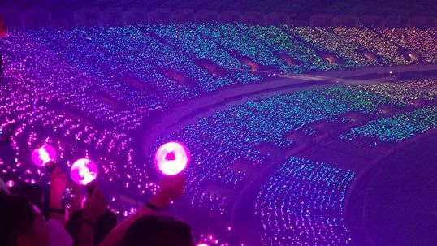

¿Quienes son BTS?
BTS (방탄소년단) que literalmente significa «Boy Scouts a prueba de
balas» es un grupo surcoreano formado en Seúl en 2010, que debutó el
13 de junio de 2013 bajo la compañía Big Hit Entertainment, con la
canción “No More Dream”, incluida en su primer sencillo “2 Cool 4
Skool”.
¿Quienes son Army?
El fandom de BTS, llamado "Army", que significa "Ejercito", le hace
honor a su nombre. Es conocido como el mejor fandom del mundo y el
más fiel, ya que se organizan para hacer
stream en plataformas musicales y lograr que la banda contantemente
rompa records.

¿Quienes somos?
Somos una fanbase de Armys de Argentina. Nuestro objetivo es
difundir sobre BTS a personas que no los conozcan y brindar un
espacio donde nos organicemos como fans. Vas a encontrar fechas
importantes, eventos que se realicen en nuestro país ya sean
presenciales o virtuales, emprendimientos de Army y mucho más.